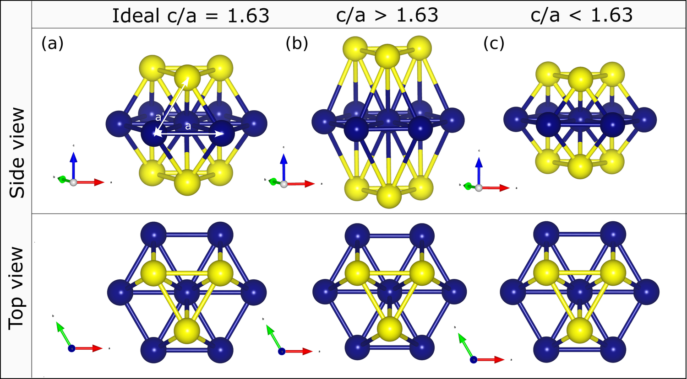
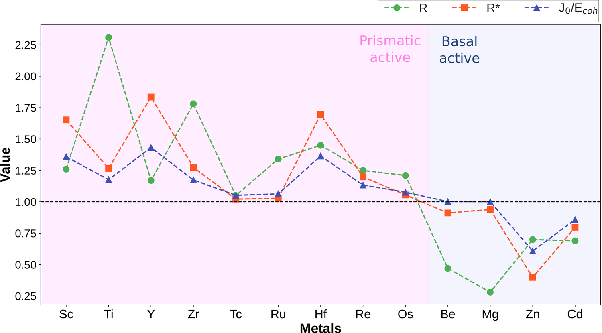
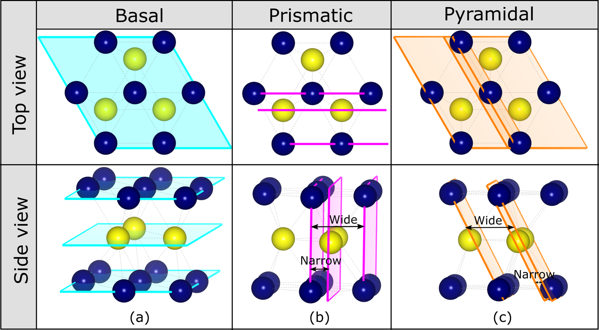

Every HCP metal has a personality. Magnesium slips on its basal plane, which is why it is so hard to form sheet from. Titanium and zirconium slip on their prismatic planes, which is part of why they are so much more workable. For a century the explanation was the c/a ratio — squash the hexagonal cell or stretch it, and the easy slip plane changes. It is a beautiful rule. It is also wrong often enough to be dangerous.
Beryllium and rhenium have c/a ratios that say one thing and slip behaviour that says another. So in the paper that became this chapter I went looking for what c/a was standing in for — and found it in the bonds.

The R* parameter
The fix was to stop treating the crystal as pure geometry and fold in the energetics of how its atomic layers interact. Using the ANNNI model I extracted an inter-layer coupling energy J0, scaled it by the cohesive energy, and combined it with c/a into a single dimensionless number, R*.
One line drawn at R* = 1 sorts all thirteen HCP metals correctly — including the ones that break the c/a rule.


From metals to alloys: the Γ descriptor
R* sorts the pure elements. But the question every alloy designer actually asks is sharper: how much aluminium can I add to titanium before it stops slipping the way I want? That needed a descriptor that reads the bond directions themselves, not the averaged crystal. So I defined Γ — the ratio of bond strength along the c-axis (apical) to bond strength in the basal plane, straight from ICOHP.
Two things make me fond of this one. First, I could derive an analytic Slater–Koster form for Γ that shows bond-length geometry dominates, with a small electronic correction (RMSE 0.031) — so the descriptor is interpretable, not a black box. Second, when I built special quasi-random structures for the alloys, Γ predicted a real, measurable transition: in Ti–Al the heterobond Γ crosses 1 at about 9 at.% aluminium — exactly where titanium is known to switch its preferred slip. The prismatic barrier climbs 2.7× faster than the basal one as Al goes in.
You can watch it happen in the stacking-fault energies. As aluminium goes into titanium, the ratio r = γusfprism / γusfbasal climbs steadily from 0.59 toward 1 — the prismatic plane losing its advantage — while the negative-control systems sit flat:
| System | composition | x | γusf basal | γusf prism | r |
|---|---|---|---|---|---|
| Ti–Al — the prismatic→basal crossover | |||||
| Pure Ti | Ti | 0 | 446 | 264 | 0.59 |
| Ti–Al | Ti₃₁Al₁ | 0.031 | 490 | 291 | 0.59 |
| Ti–Al | Ti₃₀Al₂ | 0.062 | 528 | 374 | 0.71 |
| Ti–Al | Ti₂₉Al₃ | 0.094 | 534 | 404 | 0.76 |
| Negative controls — predicted to stay prismatic, and they do | |||||
| Hf–Zr | Hf₁₆Zr₁₆ | 0.50 | 538 | 262 | 0.49 |
| Sc–Zr | Sc₂₆Zr₆ | 0.188 | 450 | 253 | 0.56 |
Why it matters for the rest of the journey
Chapters 1 and 2 are two readings of the same gauge. ICOHP told me how strong a bond is, and now how directional it is. Between them they cover a single grain of a single metal. But an alloy is a choice between elements long before it is a microstructure — so the next chapter pulls all the way back and asks the most basic chemistry question of all: given any two elements, will they even form a solid solution?